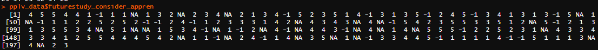
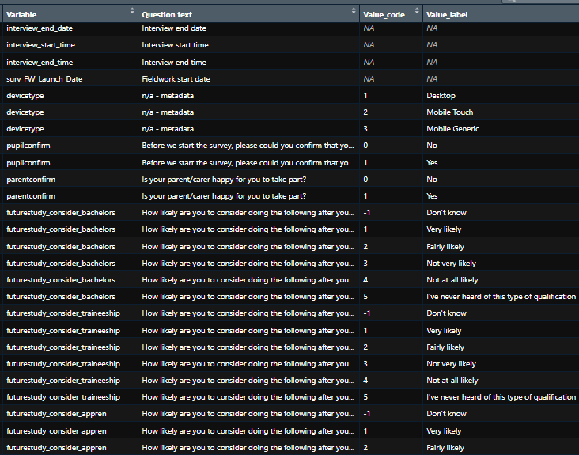
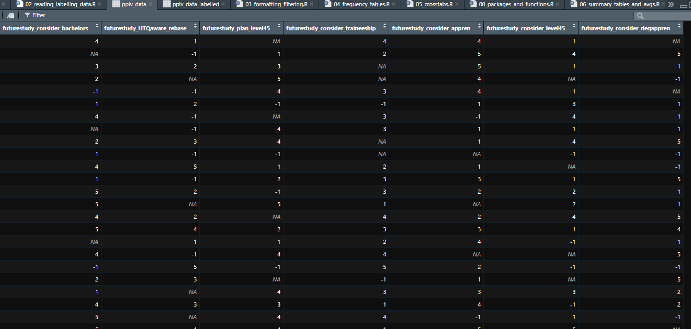
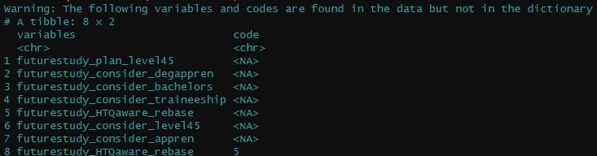
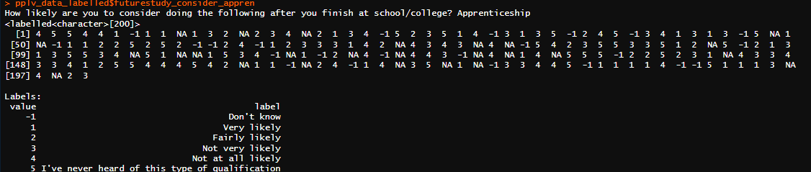
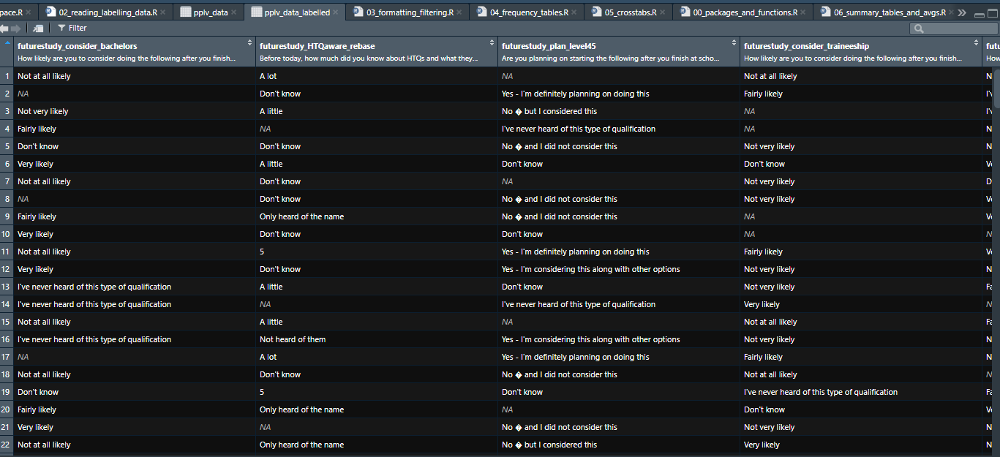

#read in data from the data folder using the haven package
TELSdata <- haven::read_spss("data/TELS_DUMMY_DATA.sav", user_na=FALSE)2 Reading and labelling data
You can use 02_reading_labelling_data.R as a reference for this section.
This section will cover how to read and label survey analysis data. This will include data in SPSS and CSV format.
2.1 Dummy data
The data we will be using in this guide will be dummy data. This means that the data sets we are using will have similar layouts to data you might be familiar with when it comes to survey analysis, but they do not contain real records.
2.2 SPSS data
2.2.1 Reading SPSS data
In this example, we will load data from a file called TELS_DUMMY_DATA from the data folder in our R project by using the haven::read_spss() function. We need to include the file extension in the name (i.e., .sav in the case of an SPSS file).
For your data in your own project, you need to replace the file name.
Things to note:
Depending on the file size, this step can take a few minutes to run.
Metadata like value labels are read into background classes (e.g., factors) in R that can be called by code for use in analysis.
user_na = FALSEensures that user-defined missing values in the SPSS file are read into R as NA.- If you want to bring in these codes into analysis (e.g., you might be interested in the share who refused) change to
TRUE.
- If you want to bring in these codes into analysis (e.g., you might be interested in the share who refused) change to
Run the code
Run the code below in the corresponding script in your project.
2.2.2 Labelling SPSS data
When you load SPSS data using haven as in the previous section, value labels are stored in the background as ‘factors’. This allows you to re-code data using the values and produce statistical outputs using the labels, which is preferred.
However, sometimes it is useful to work with the labels directly (i.e. in SPSS, you can toggle ‘Display value labels’ in the View tab). This can be useful for producing ‘tidy’ data frames, which can be read by tools like Explore Education Statistics (EES). For instance, we use this format to produce the Employer Skills Survey Official Statistics publication.
Run the code
Run the code below in the corresponding script in your project. If you are starting from this point in the guide, remember to run lines from the top of the script to read in the data and reload the packages and custom functions.
#Label SPSS datasets so that you are using labels instead of codes.
# This dataset format is not used elsewhere in this script.
TELSdata_labelled <- haven::as_factor(TELSdata)2.2.3 Data dictionaries
This is a way to display the data dictionary in the RStudio viewer and it provides variable names and value codes/labels, it also calculates an unweighted frequency table for every variable. You can customize this code to add weighted frequencies and percentages for your variables as well.
Warning
Documentation for sjPlot::view_df() is not clear on how to display weighted frequencies or percentages. The way to adapt the function is shown below.
This is the working version of the code that displays a data dictionary with variable names and value codes/labels with an unweighted frequency table for every variable. It also shows weighted frequencies and percentages for your variables. If you don’t want to show weighted frequencies or percentages, just omit the following arguments in the function: weight.by, show.wtd.prc and show.wtd.freq.
Convert weight column to numeric data type
Notice that we used dplyr::mutate() to convert the weight column TechEd_W3_cross. We did this to ensure that the weight column is recognized by the function. If you omit this step, you may get errors.
Run the code
Run the code below in the corresponding script in your project. If you are starting from this point in the guide, remember to run lines from the top of the script to read in the data and reload the packages and custom functions.
# Display the data dictionary in the R studio viewer
# This will open the dictionary in your browser (which you could save to your folder as html)
# and also displays the no. of missings for each variable
sjPlot::view_df(TELSdata %>%
#make sure that the weight variable is numeric
dplyr::mutate(TechEd_W3_cross=as.numeric(TechEd_W3_cross)),
#show the frequency of each variable
show.frq = TRUE,
#show the percentage of each variable
show.prc = TRUE,
#show the number of missings for each variable
show.na=TRUE,
#show the frequency of each variable weighted by the TechEd_W3_cross variable
show.wtd.frq = TRUE,
#show the percentage of each variable weighted by the TechEd_W3_cross variable
show.wtd.prc = TRUE,
#define weight
weight.by = TechEd_W3_cross,
#display output in browser instead of viewer pane in RStudio
use.viewer=FALSE
)If you wanted to search for a variable based on the label, you could use the following function. Just type the key words you’re looking for and it will return the variables in the console.
Below, we are going to search for questions that have the word ‘reas’ in the label.
Run the code
Run the code below in the corresponding script in your project. If you are starting from this point in the guide, remember to run lines from the top of the script to read in the data and reload the packages and custom functions.
TELSdata %>%
labelled::look_for("reas")2.2.4 Alternative data dictionary
Unlike the dictionary above, this approach enables you to create a data frame, which can be exported to Excel.
You can do this in wide or long formats as shown in the code below. The first example shows the wide format version, and the latter example shows the long format version. Long format can be better for interrogating data since each value label is assigned its own row in the table.
Run the code
Run the code below in the corresponding script in your project. If you are starting from this point in the guide, remember to run lines from the top of the script to read in the data and reload the packages and custom functions.
# data dictionary in a wide format
# create a dataframe, which can be exported to Excel
TELSdata_dic <- TELSdata %>%
#create a data dictionary
labelled::look_for(details = TRUE) %>%
#convert named list columns to character vectors so they're easier to read
labelled::convert_list_columns_to_character()
# Saves it as a csv in your work folder
data.table::fwrite(TELSdata_dic, file="TELSdata_dic.csv")
# If you want to properly interrogate the value labels, it's better to use the long format below
# since each value label is assigned its own row in the table.
# Create a dictionary but in a long format
TELSdata_dic2 <- TELSdata %>%
#create a data dictionary
labelled::look_for(details = TRUE) %>%
#convert data to long format
labelled::lookfor_to_long_format() %>%
#convert named list columns to character vectors so they're easier to read
labelled::convert_list_columns_to_character()
# Saves it as a csv in your work folder
data.table::fwrite(TELSdata_dic2, file="TELSdata_dic2.csv")2.3 CSV data
2.3.1 Reading CSV data
If you have CSV data, you can read it in using data.table::fread() like the code below, just change the parts that refer to the name of the file to reflect yours.
Note
CSV data does not contain labels, so you will need to refer to the questionnaire or data dictionary and add these manually if you want to produce labelled outputs.
Run the code
Run the code below in the corresponding script in your project.
#Read in the csv data
pplv_data <- data.table::fread("data/pplv_dummy_data.csv")2.3.2 Labelling CSV data manually
Since CSV data does not contain metadata or labels, we can add these manually. This code can also be used for re-labelling data. You can do this by defining the labels for each code and assigning that to your variables.
First, we should check if there are labels in our data.
Run the code
Run the code below in the corresponding script in your project. If you are starting from this point, make sure to read in the pplv_data from earlier in this script.
#check labels in a column before assigning labels to codes- you should just see numbers and NAs
#you can do any col but we picked futurestudy_consider_bachelors
pplv_data$futurestudy_consider_bachelorsAfter running the code above, you should see just numbers and NAs in the console as shown in the image below.

Then we are going to create vectors to define your labels as shown in the code below.
Run the code
Run the code below in the corresponding script in your project. If you are starting from this point, make sure to read in the pplv_data from earlier in this script.
#define the labels for each variable you want to label
future_study_labels <- c("Don't know" = -1,
"Very likely" = 1,
"Fairly likely" = 2,
"Not very likely" = 3,
"Not at all likely" = 4,
"I've never heard of this type of qualification" = 5
)
futurestudy_HTQ_labels <- c("Don't know" = -1,
"A lot" = 1,
"A little" = 2,
"Only heard of the name" = 3,
"Never heard of them" = 4
)
futurestudy_plan_labels <- c("Don't know" = -1,
"Yes - I'm definitely planning on doing this" = 1,
"Yes - I'm considering this along with other options" = 2,
"No - but I considered this" = 3,
"No - and I did not consider this" = 4,
"I've never heard of this type of qualification" = 5
)Second step is to use the dplyr::mutate() function to apply the labels or to relabel your data as shown below.
#mutate the columns for the specific variables to re-label the data
pplv_data <- pplv_data %>%
dplyr::mutate(
#relabelling futurestudy_consider_bachelors column with future_study_labels
futurestudy_consider_bachelors =
haven::labelled(futurestudy_consider_bachelors
, labels = future_study_labels
),
#relabelling futurestudy_HTQaware_rebase column with futurestudy_HTQ_labels
futurestudy_HTQaware_rebase =
haven::labelled(futurestudy_HTQaware_rebase
, labels = futurestudy_HTQ_labels
),
#relabelling futurestudy_plan_level45 column with futurestudy_plan_labels
futurestudy_plan_level45 =
haven::labelled(futurestudy_plan_level45
, labels = futurestudy_plan_labels
) )
#check labels after assigning labels to codes- you should see the labels under the numbers in the console
pplv_data$futurestudy_consider_bachelorsAfter running the code above, you should see the labels with the corresponding codes in the console underneath the numbers.
If you have multiple variables with the same response scale, you can add labels using a combination of dplyr::mutate() and dplyr::across():
Run the code
Run the code below in the corresponding script in your project. If you are starting from this point in the guide, remember to run lines from the top of the script to read in the data and reload the packages and custom functions.
# First you define a list that contains the response list and codes
labels <- c("Don't know" = -1,
"Very likely" = 1,
"Fairly likely" = 2,
"Not very likely" = 3,
"Not at all likely" = 4,
"I've never heard of this type of qualification" = 5)
# Then you define a list with the names of the variables you want to add labels for
variables <- c("futurestudy_consider_bachelors",
"futurestudy_consider_traineeship",
"futurestudy_consider_appren",
"futurestudy_consider_degappren",
"futurestudy_consider_level45")
# Then you use mutate across to label multiple variables at once,
# To adapt this, you need to change the labels and variables above.
pplv_data <- pplv_data %>%
dplyr::mutate(dplyr::across(all_of(variables)
, ~ haven::labelled(., labels=labels)))2.3.3 Labelling the data automatically using a dictionary
You can use the custom function labelling_data() to assign labels to the codes in your data using a dictionary file. You can use this function to save you time when it comes to assigning labels to codes in data instead of assigning them manually as shown above. It allows you to keep the codes in the data while storing the labels for those codes. It will check if the dictionary has matching variables in the data. If there is a match:
- the matched variables will be labelled in the data frame.
- the matched variables will be labelled with the question text found in the data dictionary (optional – not required if you just want to apply value labels).
Warning
This function will only work as intended if the requirements below are met.
If there is a code in the data that you want to label but it does not have a corresponding label in the dictionary, that code will remain unchanged in the result. This is demonstrated in the example below.
Requirements
The following conditions need to be met for this function to work:
- The dictionary must NOT contain any blanks in the columns that contain the codes, labels or question text (if used) that correspond to the variables of interest. Otherwise, those blanks will be used.
- Dictionary codes are only numeric values.
- The dictionary and the data file should be stored in separate files.
- The variable names in the dictionary and the data frame match. Any unmatched variable will be skipped.
- Each code and label MUST have a corresponding variable as shown in the example below.
- The dictionary is formatted properly (more on that in the loading in separate data dictionaries section).
You can standardise NA values by doing the following:
- Clean the dictionary file to make sure that the value code and value label columns have no non-standard blank values (e.g. “n/a”). This is shown in the code below.
Below is an example of what a dictionary should look like:
Notice each code and label has a corresponding variable. This is most essential part.

Loading in separate data dictionaries
First, we will read in the data and the dictionary. We will format the dictionary to make sure it is in the required format.
Run the code
Run the code below in the corresponding script in your project. If you are starting from this point in the guide, remember to run lines from the top of the script to read in the data and reload the packages and custom functions.
#read in data
pplv_data <- data.table::fread("data/pplv_dummy_data.csv")
#read in dictionary file
pplv_data_dic <- data.table::fread("data/2024-02_PPLV_PupilsLearners_NS_Dic.csv")
#format the dictionary
pplv_data_dic <- pplv_data_dic %>%
#format NA values in Value_code and value_label
dplyr::mutate(Value_code=if_else(Value_code == "n/a", NA_character_,Value_code) ) %>%
dplyr::mutate(Value_label=if_else(Value_label == "n/a", NA_character_, Value_label)) %>%
#ensure that the numeric codes are in the correct format
dplyr::mutate(Value_coden=as.numeric(as.character(Value_code)) )
NAs Introduced by Coercion
You may see the warning saying something along the line of NAs introduced by coercion when you run the code above.
This warning message occurs when you use as.numeric() to convert a vector in R to a numeric vector and there happen to be non-numerical values in the original vector.
To be clear, you don’t need to do anything to “fix” this warning message. R is simply alerting you to the fact that some values in the original vector were converted to NAs because they couldn’t be converted to numeric values.
Then we will check the values in the data to see what they look like before labelling the data.
Run the code
Run the code below in the corresponding script in your project. If you are starting from this point in the guide, remember to run lines from the top of the script to read in the data and reload the packages and custom functions.
#view the un-labelled data set
View(pplv_data)You can also use the View() function to look at what the data looks like before labelling. After running the code above, you should see the pplv data with un-labelled columns that have numerical codes as shown in the image below.
Spelling
View()
Make sure to spell View() with a capital V whenever you use this function. Otherwise, you will get an error.

Run the code
Run the code below in the corresponding script in your project. If you are starting from this point in the guide, remember to run lines from the top of the script to read in the data and reload the packages and custom functions.
#check data before assigning labels to codes- you should just see numbers and NAs
pplv_data$futurestudy_consider_bachelorsAfter running the code above, you should see numbers and NAs for futurestudy_consider_bachelors without any labels as shown in the image below.
Then we will use labelling_data() to assign labels to the codes in pplv data using the dictionary for that data set.
The column names in the dictionary that the code loops through in the example below are :
Value_code - the column where the codes are stored in the dictionary.
Value_label - the column where the labels are stored in the dictionary.
Variable - the column where the names of the variables are stored in the dictionary.
Question text - the column that contains question text that you can use for labelling columns. This column is optional.
Your column names might not match the ones in this example. If this is the case, you should make sure to use the column names that correspond to the dictionary you are using. The values assigned to each part of the function should match your dictionary file. For example, if your value label column is named value_label, you would assign it as dict_label = "value_label.
Run the code
Run the code below in the corresponding script in your project. If you are starting from this point in the guide, remember to run lines from the top of the script to read in the data and reload the packages and custom functions.
#assign labels the codes
pplv_data<- labelling_data(
#name of the data to be labelled
data= pplv_data,
#name of the dictionary
dict =pplv_data_dic,
#the column where the names of the variables are stored in the dictionary.
dict_variable= "Variable",
#the column where the labels are stored in the dictionary.
dict_label= "Value_label",
# the column where the codes are stored in the dictionary.
dict_code= "Value_code",
# the column where questions are stored in the dictionary.
dict_question = "Question text")You will see when running the code above, a warning message will appear listing the names of those variables and the codes that do not match as shown in the image below. NAs will be included in these. This will happen if the codes in your data do not match exactly with the codes in the dictionary. Those codes without a label will remain unchanged in the data.

Run the code
Run the code below in the corresponding script in your project. If you are starting from this point in the guide, remember to run lines from the top of the script to read in the data and reload the packages and custom functions.
# test that the assigning labels to codes worked - you should see the labels under the numbers in the console
pplv_data$futurestudy_consider_bachelorsAfter assigning labels to codes, run the code chunk above, you should see labels under the codes as shown in the image below. You will also see that the column has also been labelled with the question from the dictionary. This is an optional functionality of labelling_data().

Now you can use haven::as_factor() to label the data if you want to display the labels in the data instead of the codes.
Run the code
Run the code below in the corresponding script in your project. If you are starting from this point in the guide, remember to run lines from the top of the script to read in the data and reload the packages and custom functions.
#create a labelled version of the data
pplv_data_labelled <- haven::as_factor(pplv_data)You can also use the View() function to look at what the data looks like after labelling. After running the code below, you should see the pplv_data_labelled with labelled columns that have labels instead of numerical codes except for the codes that had no matches (5 in futurestudy_consider_bachelors and NAs in all the columns) as shown in the image below.
Run the code
Run the code below in the corresponding script in your project. If you are starting from this point in the guide, remember to run lines from the top of the script to read in the data and reload the packages and custom functions.
#View the labelled data set
# you should see labels instead of codes and that the columns have been labelled with text
View(pplv_data_labelled)